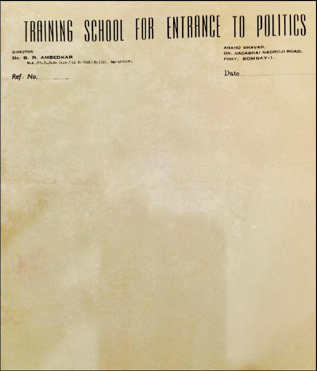

152
Letter head with Babasaheb Ambedkar’s name
Whereas for Ambedkar, the school was an entry point into the
proposed political party (RPI), the people active in RPI politics
visualised practical politics without such a Political School. So, without
understanding Ambedkar's philosophy and method of politics, the
overenthusiastic politicians (it may not be proper to call them leaders)
underestimated or neglected Ambedkar's vision behind the Political